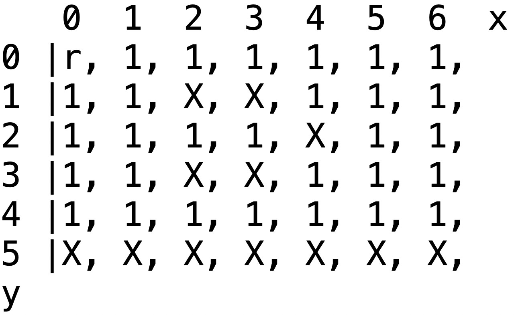
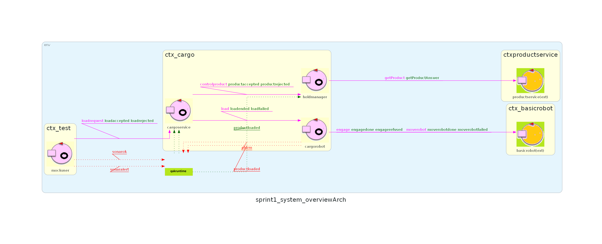

Introduction
Nello
Sprint 0 è
stato realizzato un primo modello del sistema ottenuto tramite la
formalizzazione dei requisiti forniti dal committente (figura a
destra).
L'obiettivo dello Sprint 1 è di analizzare le problematiche del core business emerse nella fase di analisi dei requisiti e realizzarne un'implementazione funzionante da fornire al committente.
L'obiettivo dello Sprint 1 è di analizzare le problematiche del core business emerse nella fase di analisi dei requisiti e realizzarne un'implementazione funzionante da fornire al committente.

Requirements
I requisiti che si vuole soddisfare in questo sprint sono i
seguenti:
- the software system is able to receive the request to load on the cargo a product container already registered in the productservice. The request is rejected when: the product-weight is evaluated too high, since the ship can carry a maximum load of MaxLoad>0 kg. the hold is already full, i.e. the 4 slots are alrready occupied. If the request is accepted, the cargoservice associates a slot to the product PID and returns the name of the reserved slot. Afttwerds, it waits that the product container is delivered to the ioport. In the meantime, other requests are not elaborated.
- is able to ensure that the product container is placed by the cargorobot within its reserved slot. At the end of the work: the cargorobot should returns to its HOME location. the cargoservice can process another load-request
- interrupts any activity and turns on a led if the sonar sensor measures a distance D > DFREE for at least 3 secs (perhaps a sonar failure). The service continues its activities as soon as the sonar measures a distance D <= DFREE.
Problem analysis
Come si rappresenta la hold?
Come analizzato durante il precedente sprint, il DDR
rappresenta internamente la hold come un piano cartesiano.
Questa viene quindi suddivisa in una griglia dove ciascuna cella è
un quadrato avente lato pari alla dimensione del basicrobot, così da
poter formalizzare il concetto di posizione, intesa come una coppia
di coordinate cartesiane. La home si troverà nel punto di origine,
quindi alle coordinate (0,0) mentre i vari slot sono visibili
nell'immagine seguente, che è analoga alla configurazione già
presente all'interno del robot fornito dal committente e per questo
non è modificabile.

In particolare si avranno:
- Home alle coordinate (0,0)
- Slot 1 alle coordinate (2,1)
- Slot 2 alle coordinate (3,1)
- Slot 3 alle coordinate (2,3)
- Slot 4 alle coordinate (3,3)
- Slot 5 alle coordinate (4,2)
- Non essendo specificata nella documentazione fornita dal committente, suggeriamo di posizionare la IOPort alle coordinate (1,5)
Come muovere il basicrobot?
Al componente cargorobot spetta il compito di
comunicare con basicrobot attraverso messaggi, come analizzato
nello sprint precedente. Questo approccio favorisce la separazione
delle funzionalità dei vari componenti facendo in modo che il
cargoservice mantenga solo la funzionalità di gestore delle
comunicazioni.
Per semplificare lo sviluppo delegando le operazioni di scelta del
percorso da eseguire al basicrobot, il quale è munito di un
sistema automatico di pianificazione del percorso affidato al componente planner,
si consiglia l'utilizzo del messaggio moverobot(TARGETX, TARGETY).
Così facendo il cargorobot dovrà essere in grado di tradurre l'identificatore dello slot ricevuto nelle rispettive coordinate assolute.
Gestione del movimento
Il basicrobot mette a disposizione diversi messaggi per muovere il DDR. Sono stati identificati due messaggi principali che permettono di definire un piano di esecuzione per spostare il robot da un punto A ad un punto B.| Messaggio | Funzionamento | Componenti | Note |
|---|---|---|---|
| moverobot(TARGETX, TARGETY) | Gestisce le richieste di posizionamento, determina il piano di movimento, restituisce moverobotdone, se ok, moverobotfailed, se errore. | planexec, robotpos | Gestisce anche il comando di utilità setpos(X,Y,D) per allienare la rappresentazione del planner sulla posizione corrente reale del robot fissata manualmente. |
| doplan(PATH, STEPTIME) | Gestisce richieste di esecuzione di una serie di mosse, restituisce doplandone, se ok, doplanfailed, se errore. | planexec | Non usa e non aggiorna alcuna mappa della stanza |
Come recuperare le coordinate?
risulta fondamentale la possibilità di recuperare le coordinate dei punti di interesse all'interno della hold, sono stati identificati due possibili approcci:- Memorizzazione delle coordinate all'interno del codice sorgente
- Memorizzazione delle coordinate in una base di conoscenza prolog
Come sfruttare il productservice e gestire la hold?
Lo stato della hold (slot liberi e peso della nave cargo) deve
essere gestito da uno degli attori del sistema; per fare in modo che
il cargoservice mantenga solo la funzionalità di gestore delle
comunicazioni si ritiene opportuno affidare questa responsabilità ad
un attore dedicato di nome holdmanager , il quale
si occuperà anche dell'interfacciamento con il
productservice . Il productservice viene fornito
dal committente e permette di recuperare le informazioni riguardanti
un prodotto tramite l'invio di un messaggio
getProduct nel quale viene specificato il PID del
prodotto da ricercare.
Questo attore holdmanager fungerà da intermediario tra il cargoservice e il productservice, prendendo in carico la gestione della hold tramite il tracciamento degli slot liberi, di quelli occupati e del peso dei prodotti caricati nella nave cargo.
Questo attore holdmanager fungerà da intermediario tra il cargoservice e il productservice, prendendo in carico la gestione della hold tramite il tracciamento degli slot liberi, di quelli occupati e del peso dei prodotti caricati nella nave cargo.
Tracciamento del carico
Il tracciamento del carico potrà avvenire in due modi:- Tracciamento persistente
- Tracciamento non persistente
Come simulare i componenti non appartenenti al core business?
Essendo lo Sprint1 incentrato sullo sviluppo del core business, i componenti non appartenenti a questa parte del sistema possono essere simulati nelle loro interazioni con il cargoservice tramite entità fittizie.
Logical Architecture
